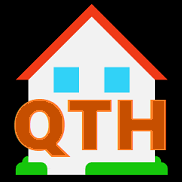
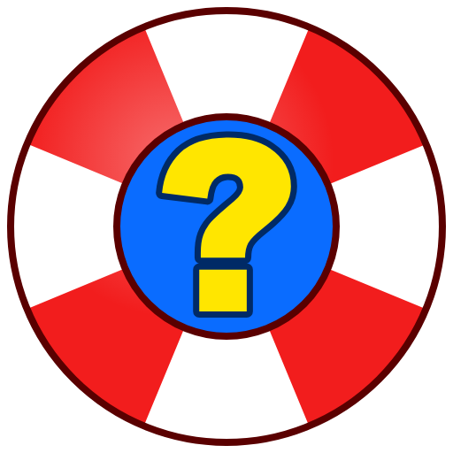
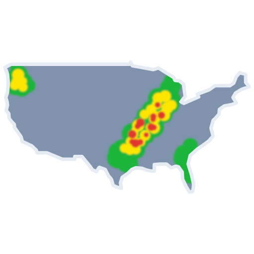
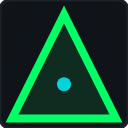
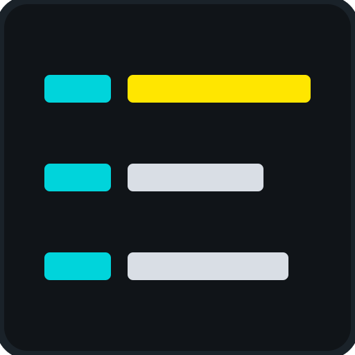
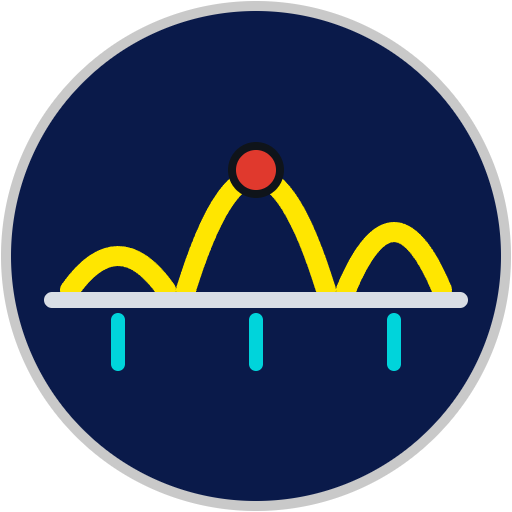
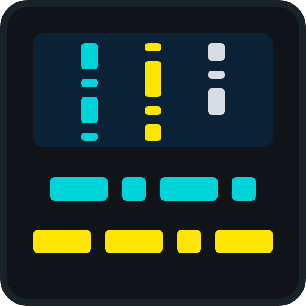

This is some test text!!!
| Spots: 0 | |
| Max Age: : | |
| Maximum Usable Frequency | Critical Frequency NVIS | Es Probability Index | Probability of Aurora | Tropospheric Inversion VHF | ||||||||||
| 0 | ||||||||||||||
| Poor | Good | |||||||||||||
 |
||||||||||||||
|
|
||||||||||||||
|
0km
2m TI
>500km
6m Es
|
||||||||||||||
| <5 | 14 | >28 | ||||||||||||
| <1 | 5 | >14 | ||||||||||||
| 10% | 50% | 90% | ||||||||||||
| Santa Tracker | |
| Santa Is Over | |
| Next Stop | |
|
Contact Lost With Santa!
Last Seen:
|
|
| Gifts Delivered | 0 |
Santa Leaves In
0Days
00Hours
00Minutes
00Seconds
|
BirdWatch
|
Pass Timeline
Export Passes (.ics)
↔
|
GridTracker2
|
|
|
0.000.000 (?)
|
|
|
-
|
-
|
|
|
|
|
|
◀
-no rig-
▶
waiting for message
...no data yet...
| Rx Calls | 0
|
QSO | 0
|
| Rx DXCC | 0
|
QSL | 0
|
Log Entries Filtered
|
|||
|
Clear Live
|
...
Clear Log
|
||
Map View Filters
| Band | |
| Mode | |
| Prop | |
| Data | |
| Award |














Print
Receive UDP Messages
| No messages yet. | |
Never |
|
Forward UDP Messsages
| e.g. | GridTracker on another host |
| ft8battle.com | |
Receive ADIF UDP Broadcasts For Logging
Station
| m |
Display
| 10 fps | |
Settings
Reset Panels
Reset Button Order
Export Settings
Import Settings
Clear All Settings!
On QSO Reply
Operational
Service
Online
SimplePush API Key
| 24h | |
|
Test
|
Pushover Credentials
| 24h | |
|
Test
|
Callsign Lookup Service
| Service |
Test
Lookups
Callsign Databases
| Database | Enabled | Last Download | Details |
|---|---|---|---|
| Big CTY | ✔ | Never | |
| US Callsigns | Never | 0 | |
| Canada Callsigns | Never | 0 | |
| Logbook of The World | Never | 0 | |
| eQSL | Never | 0 | |
| ClubLog OQRS | Never | 0 |
Audio
| Output Device | |
| QSO Log Event Notification | |
| File Audio Volume | 1 |
Text-To-Speech
| Voice | |
| Speech Rate | 1 |
| Speech Pitch | 1 |
| Speech Volume | 1 |
Rig Control
|
Add VFO
|
|
| Port | Choose Port |
| Refresh | |
| Status | |
| SSB | |
| Satellites |
- MHz
Add |
Rotor Control
| Port | Choose Port |
| Status | |
Network Audio
|
Add Stream
|
| Status |
QSL Location Authority
Apply Changes
Logbook Filters
| Working Callsign(s) | ||
| Working Grid(s) | ||
| Working Date | ||
|
No Date
|
||
Apply Changes
Gridsquare Colors
Reset Colors
Band Colors
Reset Colors
DX Feeds
| G7VRD: DX Cluster / CW Skimmer, Spothole | |
| Feed Spots Max Age | 5m |
Clear All Feeds |
|
Modes
Bands
Base Map
| Day | Night | |
|---|---|---|
| Map |
Apply Changes
|
Apply Changes
|
| Brightness | ||
Paths
| Width | Color | Night Color | |
|---|---|---|---|
| QSX | 1.5 | ||
| QRZ | 1.5 | ||
| RX Spot | 1.5 |
|
|
| 15 fps | |||
Grayline
| Darkness | 10% |
| Terminator | Civil |
Overlays
| Color | ||
|---|---|---|
| Range Rings Spacing | 2500 km | |
| Prediction Opacity | 0.3 |
Grids
| Grid Opacity | 10% |
| 'All Grid Overlay' Opacity | 100% |
| Live Grid Decay | 10m |
Display
| 50% |
Logbooks On This Computer
| Menu Button | Load At Startup | Log QSO | Details | |
|---|---|---|---|---|
| App Log(s) |
Add File
|
|||
| GridTracker2 | Backup Logs |
|||
| Local File(s) |
Add File
|
Logging Programs
| Connect | Menu Button | Load At Startup | Log QSO | IP · Port | |
|---|---|---|---|---|---|
| N1MM Logger+ | |||||
| Log4OM |
|
||||
| N3FJP Loggers |
|
||||
| DXKeeper | |||||
| HRD Logbook <= v6.8.x |
Online Logbooks
| Menu Button | Load At Startup | Log QSO | Details | Test | |
|---|---|---|---|---|---|
| QRZ.com | Test |
||||
| ClubLog | Test |
||||
| LotW |
TQSL Path
No file selected
|
Test Download
Test TQSL |
|||
| eQSL.cc | Test |
||||
| HRDLOG.net | Test |
||||
| Cloudlog/Wavelog |
|
Test |
|||
| HamCQ.cn | Test |
PSK-Reporter 24 Hour History
Alerts
| Entity | Count | Type | On Single | On Multiple | |
|---|---|---|---|---|---|
| Entity | Count | Type | On Single | On Multiple | On ATNO | |
|---|---|---|---|---|---|---|
Reference
Exceptions
. . .
Rules
| Custom Alerts | ||||||
|---|---|---|---|---|---|---|
| Type | Value | Notify | Repeat | |||
|
ADD
|
| Each VFO's Satellites row (Settings, Rig Control) says what it receives and transmits on; the first in the list that fits is used. Right-click a transmitter's downlink or uplink to pick its own VFO | |
Auto-Track
| 0° |
Logging
Doppler Table
Stations
| Active | Callsign | Grid | Height | Min El | Notes |
|---|
No stations yet: add one, or paste a station's sked line
Add Station
Paste Sked Line
Copy My Sked Line
| 0° |
| Off |
Mutual Passes (Next 72 Hours)
Save All As ICS
Copy All
Panel View
Reset Panels
Map
| 86% | |
| 1.5 | |
| 11 pt | |
Pass Alerts
| 5 |
| 10° |
Test Alert |
Tracked Satellites
Add Satellite
Scan Near AOS
Satellite And Transmitter Data: SatNOGS DB (Libre Space Foundation And Contributors), CC BY-SA 4.0 · Element Sets (TLE) And Frequencies: AMSAT
GridTracker2
GridTracker2 is a warehouse of amateur radio information presented in an easy to use interface
Learn more at GridTracker.org!
Copyright © 2026
Stephen Loomis NØTTL
Henry Forte N2VFL
Matthew Chambers NRØQ
Sebastian Delmont KI2D
Christian Bayer WA4YA
Paul Traina K6PST
Jon Angliss KF5QHQ
Beau Gunderson N7YHF
Jonathan Fick KEØYBL
Florian Wolters DF2ET
Matt HB9HWI
GridTracker.org